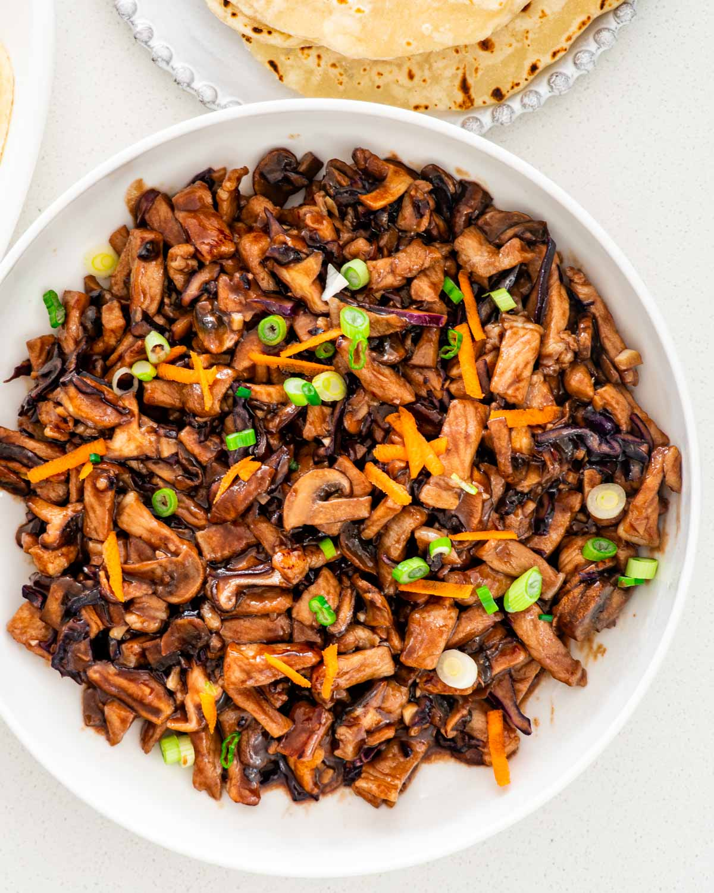

Moo Shu Pork Recipe
Home Button

This moo shu pork recipe isn't your typical Chinese takeout fare.
You may be surprised to know that moo shu pork is actually a home-style dish in China that is served without any pancakes.
Try this authentic Chinese recipe at home!
Ingredients
For the Pork & Marinade
- 1/2 pound pork
- 1 teaspoon light soy sauce
- 1 teaspoon Shaoxing wine (or dry sherry)
- 1 teaspoon cornstarch
- 1/2 teaspoon sesame oil
- 1 slice ginger (minced)
For the Eggs
- 3 eggs
- 1 teaspoon Shaoxing wine (or dry sherry)
- 1/4 teaspoon salt
- 1 tablespoon oil
For the Rest of the Dish
- 2 tablespoons oil
- 2 scallions (chopped)
- 1 cucumber (halved, deseeded, then cut on a 45-degree angle)
- 1 cup rehydrated black wood ears (washed and drained)
- 2 teaspoons Shaoxing wine (or dry sherry)
- 2 teaspoons light soy sauce
- 1 tablespoon oyster sauce
- 2 tablespoons water
- Salt (to taste)
Steps
- First, combine the pork with the marinade ingredients and set aside for 20-30 minutes.
- Then cook the eggs. Whisk together the eggs with the rice wine and salt. Heat 1 tablespoon of oil in a wok over high heat. Add the beaten eggs, scramble,
and turn off the heat. Dish out the cooked eggs and set aside.
- Heat the wok over high heat once again, and add 2 tablespoons of oil. When the oil starts to smoke, add the pork and sear the meat until lightly browned.
Then add the chopped scallion and stir.
- Next, add the sliced cucumbers and wood ear mushrooms. Stir fry to thoroughly combine the ingredients. Now it’s time to add
the Shaoxing wine, light soy sauce, oyster sauce and water.
- Stir fry everything well for an additional 30 seconds. Finally add the cooked eggs, stir-fry
for another 30 seconds, and serve!
Source website